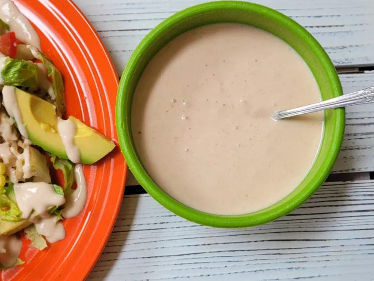

< back
Cottage Cheese Taco Dressing

Description
This cottage cheese taco dressing is a quick, blended high-protein dressing using cottage cheese, salsa, and taco seasoning. Pour it over a salad, add it to tacos, or even dip chips in it for a snack.
Ingredients
- 1 cup cottage cheese
- 1/2 cup salsa
- 1/8 teaspoon taco seasoning
Steps
- Place cottage cheese, salsa, and taco seasoning in the bowl of a food processor or blender. Blend until smooth.